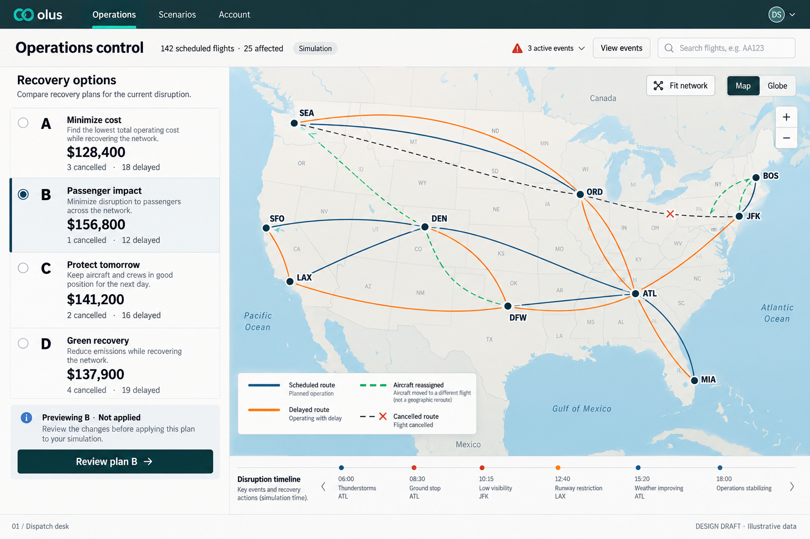
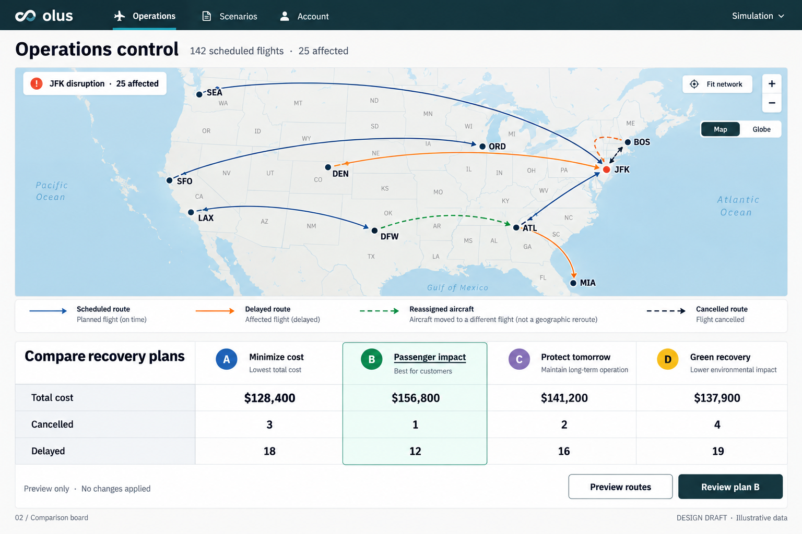
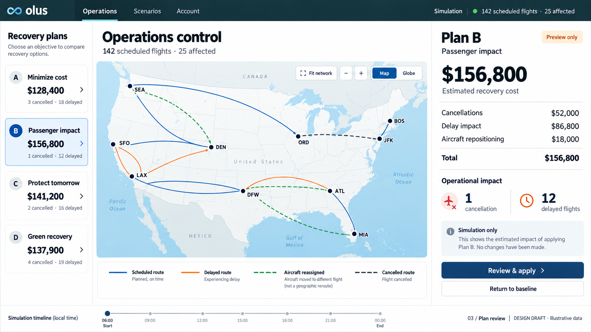

Three layout options. Visual mockups with illustrative data; these are not interactive application screens.
Recovery options and costs beside an uninterrupted map.

A large map above a table comparing costs, cancellations and delays.

Plan choices, map and a visible financial breakdown in three columns.
